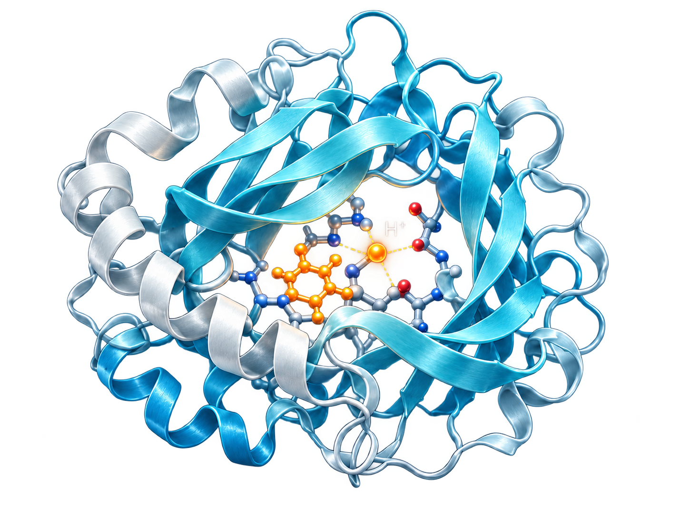

01
protonation-analysis
Processes XVG files, classifies protonation states, applies hysteresis and extracts TRR microtrajectories.
Plataforma de rastreamento e análise termodinâmica de estados de protonação e microestados moleculares, aplicada à pesquisa e ao desenvolvimento de biofármacos e imunoterapias, incluindo CAR-T anti-CD22.

The CpHMD / MM/PBSA suite aims to standardize protonation analysis and binding free-energy calculations for the scFv m971 × CD22 antibody–antigen system.
Provide a traceable workflow for protonation analysis, molecular simulation processing and free-energy validation.
The system consists of three main products that connect protonation analysis, GROMACS processing and free-energy data validation.
Processes XVG files, classifies protonation states, applies hysteresis and extracts TRR microtrajectories.
Prepares GROMACS structures and trajectories and automates MM/PBSA calculations in HPC environments.
Aggregates free-energy results and checks data integrity and provenance.
This module analyzes protonation states, hysteresis, histidine microstates and molecular trajectory segments.
| State | Lambda Criterion |
|---|---|
| Protonated | λ ≤ 0.2 |
| Transition Zone | 0.2 < λ < 0.8 |
| Deprotonated | λ ≥ 0.8 |
Lambda values outside the interval [0, 1] are retained without clamping.
Transition-zone frames are not discarded during microstate analysis. The effective state inherits the last confirmed physical state.
The HSPT group is evaluated cooperatively under the physical constraint Σλ ≈ 1. HSP, HSD and HSE retain distinct identities in microstate signatures.
This module prepares molecular structures, processes trajectories and runs binding free-energy calculations in high-performance computing environments.
The gromacs-pipeline.cfg file supports configurable worker counts and OMP/MPI parameters. The pipeline can also use membrana.json generated by Product 1 when membrane support is applicable.
Use the configuration files and version-specific instructions from the project repository before running production calculations.
This module aggregates free-energy results and verifies data integrity and provenance before a batch is accepted for reporting.
ΔGbinding = Gcomplex − Greceptor − Gligand
| Contracts | Validation Scope |
|---|---|
| C1–C5 | Frame counts, temporal alignment, system identity, energy consistency and CSV/DAT agreement. |
| C6 | Consistency of Poisson–Boltzmann parameters across folders. |
| C7–C8 | Microstate signature validation and reconstruction from the corrected PDB. |
| C9–C10 | PBC processing provenance and consistency of software versions and membrane modes. |
Each record should link to its original document, version, rationale and implementation evidence.
Research Group: GEPEsS — Protein Engineering and Health Solutions Research Group.
Institution: Fiocruz Ceará.
Computing Infrastructure: HPC cluster gepess3, including gn009/gn010 nodes with Gold 6130 processors.
Consult the original project documents, source code, version history, RDC/RDM records and scientific references for complete technical details.
GEPEsS / Fiocruz Ceará — CpHMD / MM/PBSA Technical Documentation.